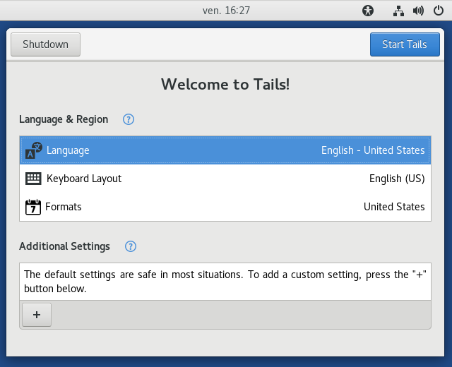

You can help Tails! The first alpha for the redesigned Tails Greeter is out. We are very excited and cannot wait to hear what you think about it :)
What is Tails Greeter?
Tails Greeter is the set of dialogs that appear after the boot menu, but before the GNOME Desktop appears.
It lets you choose your language, enable your persistent volume, and set a number of other options.
Why a new Tails Greeter?
We had two main reasons to redesign Tails Greeter:
- Usability testing has demonstrated that it is not as easy to use as we would like, especially for people trying Tails for the first time.
- We have pushed the old interface to its limits; it cannot accommodate the options we would like to add to it.
What is new in the redesigned Tails Greeter?
Nearly everything you can see has changed! We have been working for more than two years with designers to make Tails Greeter easier to use:

How to test the redesigned Tails Greeter?
Keep in mind that this is a test image. We did not carefully test it so it is not guaranteed to provide any security or anonymity.
But test wildly!
Download and install
experimental Tails ISO image including the redesigned Tails Greeter
The line corresponding to the ISO image is the one whose size is 1G.
You cannot install this ISO image from Tails 2.x. It is impossible as well to upgrade to this ISO image from Tails 2.x. So, either install or upgrade from a non-Tails system, or start this ISO image from DVD and then clone it to a USB stick.
To install this ISO image, follow our usual installation instructions, skipping the Download and verify step.
What to test
Don't hesitate to test all kinds of options, and ensure they are taken into account in the Tails session.
If you find anything that is not working as it should, please report to us on tails-testers@boum.org, including the exact filename of the ISO image you have tested.
Known issues in the redesigned Tails Greeter
- This experimental ISO image is based on Tails 3.0~alpha1, so all open issues for Tails 3.0 apply to it as well.
- Tails Greeter is not translated in many languages yet.
Like it?
We have a donation campaign going on: we explained you why we needed donations, how we use these donations, and we shared with you our plans for the next years.
So if you want Tails to remain independent, if you want to enable the Tails team to work on projects we think are important, such as redesigning Tails Greeter, please take one minute to make a donation.